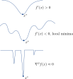
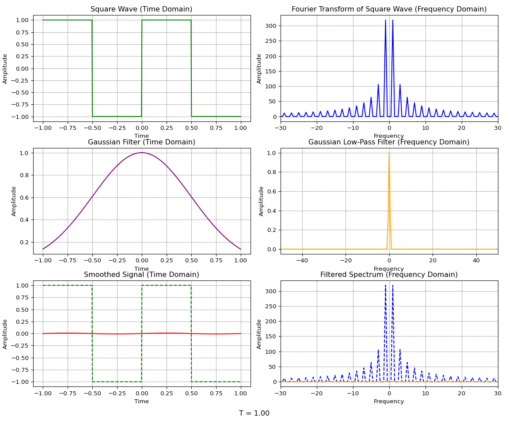

Gaussian homotopy is a technique that can be used to effectively broadcast the gradient of a non-convex function outward to help scape local minima.
Author
Simon Ghyselincks
Published
October 22, 2024
$$
$$
Motivation
So far we have examined optimization techniques using gradient descent and the Gauss-Newton method. These methods are powerful but can be limited by the presence of local minima in the optimization landscape. In this lecture we will explore a technique called Gaussian homotopy that can be used to escape local minima in optimization problems.
To recap the steps used so far in optimization, we have an objective \[\operatorname*{argmin}f(x),\]
where \(x \in \mathbb{R}^n\) is an unconstrained optimization variable. The objective can be searched out by stepping in a direction itertively, in general: \[x_{k+1} = x_k - \alpha_k H \nabla f(x_k),\]
where \(\alpha_k\) is the step size. The gradient \(\nabla f(x_k)\) can be computed explicitly or using automatic differentiation. The matrix \(H\) is a modifier that depends on the method being used: \[H =
\begin{cases}
I & \text{Gradient Descent} \\
(J^T J)^{-1} & \text{Gauss-Newton}
\end{cases}
\]
However, optimization is often performed on non-convex functions, in which case the path to a global minimum can be obstructed by local minima. Three categories of increasingly non-convex functions are shown below.
 Figure: Three categories of increasingly non-convex functions illustrating potential local minima that can obstruct the path to a global minimum.
Some examples for each of the three catergories are given in the following table:
Category
Function
Local Minima
Convex
\(f(x) = x^2\)
Global minimum at \(x=0\)
Non-Convex but \(f'(x)<0\)
\(f(x) = -\mathcal{N}(x; 0, 1)\)
Global minimum at \(x=0\)
Non-Convex with \(f'(x) \geq 0\)
\(f(A,B,w) = w^T \sigma (B \sigma (A x))\)
Multiple local minima
Non-Convex and Poorly Conditioned \(\nabla^2 f(x)\)
\(f(t) = x(t)^T A x(t), \quad x(t) = \text{square wave}\)
Multiple local minima and discontinuous
To illustrate these functions even more we can plot them as well.
Show the code
import numpy as npimport matplotlib.pyplot as pltx = np.linspace(-5, 5, 100)y1 = x**2y2 =-np.exp(-x**2)y3 = np.sin(x) +.5*x#square wavedef square_wave(x):return1if np.sin(3*x) >0else0y4 = [square_wave(xi)**2for xi in x]fig, ax = plt.subplots(2, 2)ax[0, 0].plot(x, y1)ax[0, 0].set_title("Convex: $f(x) = x^2$")ax[0, 1].plot(x, y2)ax[0, 1].set_title("Non-Convex but $f'(x)<0$ \n $f(x) = -\mathcal{N}(x; 0, 1)$")ax[1, 0].plot(x, y3)ax[1, 0].set_title("Non-Convex with $f'(x) \geq 0$ \n $f(x) = sin(x)+.5 x$")ax[1, 1].plot(x, y4)ax[1, 1].set_title("Non-Convex and Poorly Conditioned $\nabla^2 f(x)$")plt.tight_layout()plt.show()
In this case the direction does not follow the gradient descent rule, there could be a stochastic element. The general algorithms that implement this will have the property that the step size decreases over time such that
\[ \| \alpha_k d_k \| \to 0, \ k \to \infty\]
The implementation ignores seeking information about the gradient or the Hessian of the function. Instead some points in the surrounding region are computed and the most optimal decrease for the next step is selected.
The method has been known since the 1950s but it fell out of favour due to the slow rate of convergence. However, with parallel computing advances it has become more feasible to use again. For a large set of direct search methods, it is possible to rigorously prove that they will converge to a local minimum (Kolda, Lewis, and Torczon 2003).
Homotopy
In mathematics, homotopy refers to the continuous transformation of one function into another. In optimization, homotopy—or continuation optimization—is used to transform a highly non-convex function into a simpler, often more convex surrogate function. This approach enables the optimizer to escape local minima and approach a global minimum by incrementally tackling easier, intermediate optimization problems.
The core idea behind homotopy optimization is to relax a difficult optimization problem into a series of smoother problems that gradually resemble the original objective function. This relaxation process spreads the gradient and Hessian information outward, making the function landscape easier to navigate and minimizing the risk of getting stuck in local minima.
This can be accomplished using a convolution with a simple function as a kernel. The kernel that is used can have variable width and parameterization, there are varying degrees of relaxation which can be parameterized using a \(t\) time variable. As \(t \to 0\) the function becomes more like the original function, and as \(t \to 1\) the function becomes more like the smoothing function. The homotopy between the two is parameterized by \(t \in [0, 1]\).
In the case of optimization, the technique is know as homotopy optimization or continuation optimization. The optimization process starts with the smoothed function and then gradually moves back to the original function using the optimization steps from the relaxed prbolem. This is known as a continuation method, and the scheduling of the homotopy parameter \(t\) is the continutation schedule. A summary description with more details and advanced techniques can be found in work by Lin et. al (Lin et al. 2023).
Example
Let \(f(x)\) be the original function and \(g(x)\) be the smoothing function. The homotopy function \(h(x, t)\) can be defined as and interpolation between the two functions:
\[h(x, t) = (1-t) f(x) + t g(x).\]
This new function has the important property that \(h(x,0) = f(x)\) and \(h(x,1) = g(x)\) so it represents a continuous path of deformation between the two functions, beginning at \(t=1\) with a simpler relaxed problem and ending at \(t=0\) with the original problem.
The new minimization problem becomes:
\[\operatorname*{argmin}_{\mathcal{X}} h(x, t).\]
A schedule can be set up for the times so that a series of times \(\{t_0, t_1, \dots t_k, \ldots, t_n\}\) are used to solve the problem. We solve at \(t_0 = 1\) and then gradually decrease the value of \(t\) to \(0\). The solution \(x_k\) at \(t_{k}\) is used as the starting point for the next iteration \(t_{k+1}\) until reaching \(t_n = 0\).
In the case where the values of \(x\) may be constrained, this becomes similar to the Interior Point Method, where the constraints are relaxed and then gradually tightened.
Gaussian Homotopy
A common case of homotopy is the Gaussian homotopy, where the smoothing function is a Gaussian function. The Gaussian function is a widely used in signal processing and image processing due to its properties as a low-pass filter. For example, a Gaussian blur is applied to images to aid in downsampling since it preserves the lower resolution details while removing high-frequency noise that may cause aliasing.
To illustrate the low-pass filtering property, consider a Gaussian function \(g(x)\) and its Fourier transform \(\hat{g}(k)\):
The Fourier transform of the Gaussian is another Gaussian, it is an eigenfunction of the Fourier transform operator. The convolution theorem states that the convolution of two functions in the spatial domain is equivalent to the multiplication of their Fourier transforms in the frequency domain:
The convolution of a function \(f(x)\) with a Gaussian \(g(x)\) can be used to remove the high-frequency components of the function while allowing the low-frequency, widely spread components to remain.
A wide Gaussian in the time domain corresponds to a narrow Gaussian in the frequency domain, and vice versa. So a wide gaussian only lets through the lowest frequencies, while a narrow Gaussian lets through the highest frequencies. At the limit as the Gaussian becomes infinitely narrow, it becomes a delta function \(g(x) = \delta(x)\) in the time domain, a constant function \(\hat{g}(k) = 1\) in the frequency domain. The convolution of a delta function with a function \(f\) is the function itself, so the delta function does not change the function. The multiplication of the function \(\hat f(k)\) with the constant function \(1\) is the function itself, so the constant function does not change the function in the frequency domain.
Show the code
import numpy as npimport matplotlib.pyplot as pltfrom scipy.fftpack import fft, ifft, fftfreq, fftshiftfrom matplotlib.animation import FuncAnimation# Generate a square wave in the time domaindef square_wave(t, period=1.0):"""Creates a square wave with a given period."""return np.where(np.sin(2* np.pi * t / period) >=0, 1, -1)# Time domain setupt = np.linspace(-1, 1, 500)square_wave_signal = square_wave(t)freq = fftfreq(t.size, d=(t[1] - t[0]))square_wave_fft = fft(square_wave_signal)# Function to update the plot for each frame, based on current sigma_tdef update_plot(sigma_t, axs, time_text): sigma_f =1/ (2* np.pi * sigma_t) # Standard deviation in frequency domain gaussian_time_domain = np.exp(-0.5* (t / sigma_t)**2) gaussian_filter = np.exp(-0.5* (freq / sigma_f)**2) filtered_fft = square_wave_fft * gaussian_filter smoothed_signal = np.real(ifft(filtered_fft))# Update each subplot with new data axs[1, 0].clear() axs[1, 0].plot(t, gaussian_time_domain, color="purple") axs[1, 0].set_title("Gaussian Filter (Time Domain)") axs[1, 0].set_xlabel("Time") axs[1, 0].set_ylabel("Amplitude") axs[1, 0].grid(True) axs[1, 1].clear() axs[1, 1].plot(fftshift(freq), fftshift(gaussian_filter), color="orange") axs[1, 1].set_title("Gaussian Low-Pass Filter (Frequency Domain)") axs[1, 1].set_xlabel("Frequency") axs[1, 1].set_ylabel("Amplitude") axs[1, 1].set_xlim(-50, 50) axs[1, 1].grid(True) axs[2, 0].clear() axs[2, 0].plot(t, square_wave_signal, color="green", linestyle="--") axs[2, 0].plot(t, smoothed_signal, color="red") axs[2, 0].set_title("Smoothed Signal (Time Domain)") axs[2, 0].set_xlabel("Time") axs[2, 0].set_ylabel("Amplitude") axs[2, 0].grid(True) axs[2, 1].clear() axs[2, 1].plot(fftshift(freq), fftshift(np.abs(square_wave_fft)), color='blue', linestyle='--') axs[2, 1].plot(fftshift(freq), fftshift(np.abs(filtered_fft)), color="orange") axs[2, 1].set_title("Filtered Spectrum (Frequency Domain)") axs[2, 1].set_xlabel("Frequency") axs[2, 1].set_ylabel("Amplitude") axs[2, 1].set_xlim(-30, 30) axs[2, 1].grid(True)# Update the time text time_text.set_text(f"T = {T:.2f}")# Initialize the figure and plot layout for animationfig, axs = plt.subplots(3, 2, figsize=(12, 10)) # Increased figure size for animationaxs[0, 0].plot(t, square_wave_signal, color='green')axs[0, 0].set_title("Square Wave (Time Domain)")axs[0, 0].set_xlabel("Time")axs[0, 0].set_ylabel("Amplitude")axs[0, 0].grid(True)axs[0, 1].plot(fftshift(freq), fftshift(np.abs(square_wave_fft)), color='blue')axs[0, 1].set_title("Fourier Transform of Square Wave (Frequency Domain)")axs[0, 1].set_xlabel("Frequency")axs[0, 1].set_ylabel("Amplitude")axs[0, 1].set_xlim(-30, 30)axs[0, 1].grid(True)# Add a text annotation for time at the bottom of the figure with extra spacetime_text = fig.text(0.5, 0.02, "", ha="center", fontsize=12) # Adjusted position for clarity# Adjust subplot spacing specifically for animationplt.tight_layout(rect=[0, 0.05, 1, 1]) # Extra space at the bottom for time text# Animation settingssteps =100def animate(frame):global T # Declare T as a global variable for use in update_plot T =1- (frame / steps) # Scale frame number to a T value between 1 and 0 sigma_t =0.5* T +0.001* (1- T) # Interpolate sigma_t update_plot(sigma_t, axs, time_text)# Create and display the animationani = FuncAnimation(fig, animate, frames=steps, interval=100)# Save the animation as a GIFani.save('imgs/gaussian_homotopy.gif', writer='imagemagick', fps=8)plt.show()

For Gaussian homotopy, the continuous transformation between the original function and the relaxed version is given by a convolution with a Gaussian kernel. We let \(\sigma(t)\) be the standard deviation of the Gaussian kernel at time \(t\). The deviation will be \(\sigma(0) = 0\) and \(\sigma(1) = \sigma_{\text{max}}\) so that the homotopy at any time \(t\) is given by:
The Gaussian kernel should be divided by its partition function \(z(t) = \int \exp(-\frac{\xi^2}{\sigma(t)^2}) d\xi\) in theory so that the kernel is normalized, but for the use case where \(h(x, t)\) is used as a surrogate function for optimization, the partition function \(z(t)\) does not change the minimizer of the function.
Stochastic Optimization
Since the objective is to minimize over the integral given by \(h(x, t)\), a stochastic method can be used to estimate the minimizer in expectation using Monte Carlo methods. The integral can be approximated by sampling \(N\) points from the Gaussian kernel and averaging the function values at those points:
For a given \(t\) and point \(x\) where we want to estimate the function \(h(x, t)\), we can sample \(N\) points from a Gaussian kernel centered at \(x\) with standard deviation \(\sigma(t)\) and evaluate the function at those points. The average of the function values at those points will be an estimate of the function value at \(x\).
Implementation Choices
There are two ways to approach this problem when using numerical methods.
Discretize then Optimize: The integral is first discretized by choosing a set of points \(\{xi_1, \xi_2, \ldots, \xi_N\}\) and then the function is evaluated using that same discrete kernel across all points:
This sum can end up being large if there are many points that are selected.
Optimize then Discretize: In this case we start with gradient descent and the continuous function \(h(x, t)\) and then sample the function at the points \(\{xi_1, \xi_2, \ldots, \xi_N\}\) to estimate a gradient.
This formulation can technically converge even with \(| i | = 1\) but with very slow convergence.
Now that the Gaussian homotopy has been introduced, we can move on to the implementation of the algorithm.
Code Implementation
As usual for studying a problem we come up with a suitable toy dataset. In this case it should be a function that has multiple minima, is non-convex, and has a poorly conditioned Hessian.
The function is two superimposed Gaussian functions that impose a local minimum at \((2, 2)\) and \((-2, -2)\) but with very little gradient information far away from the minima.
Show the code
import matplotlib.pyplot as pltimport torchdef objective_function(X):""" A 2D function with multiple local minima. Parameters: X (torch.Tensor): A tensor of shape (N, 2) containing the input points. """ x1 = X[:, 0] x2 = X[:, 1] y =-torch.exp(-((x1 -2)**2+ (x2 -2)**2) /0.1) \-2* torch.exp(-((x1 +2)**2+ (x2 +2)**2) /0.1)return y# plot the functionx1 = torch.linspace(-5, 5, 100)x2 = torch.linspace(-5, 5, 100)X1, X2 = torch.meshgrid(x1, x2, indexing='ij')X = torch.stack([X1.flatten(), X2.flatten()], dim=1)y = objective_function(X).reshape(100, 100)plt.contourf(X1, X2, y, levels=100)plt.colorbar()plt.xlabel('x1')plt.ylabel('x2')plt.title('Objective function')plt.show()
Objective Function of Two Gaussians.
The next step is to create a time parameterized function \(h(x, t)\) that is the Gaussian homotopy of f(x). In practical terms, the starting \(\sigma_{\text{max}}\) is being modified by a \(t\) parameter when multiplied by the random noise. At \(t=0\) the function is the original function, and at \(t=1\) the function is being convolved numerically with a Gaussian kernel that is \(\mathcal{N}(0, \sigma_{\text{max}})\). The time points in between are a homotopy between the two functions.
def gaussian_homotopy(func, x, batch_size=1000, sigma=1.0, t=0.5):""" Computes the Gaussian homotopy function h(x, t) using Monte Carlo approximation. Args: func: The original objective function to be optimized. x: A tensor of shape (N, D), where N is the number of points and D is the dimension. batch_size: Number of samples to use in Monte Carlo approximation. sigma: Standard deviation of the Gaussian kernel. t: Homotopy parameter, varies from 0 (original function) to 1 (smoothed function). Returns: y: A tensor of shape (N,), the approximated h(x, t) values at each point x. """ N, D = x.shape# Sample from the t=1 gaussian kernel kernel = torch.randn(batch_size, D) * sigma# Repeat x and z to compute all combinations x_repeated = x.unsqueeze(1).repeat(1, batch_size, 1).view(-1, D) kernel_repeated = kernel.repeat(N, 1)# Compute the monte carlo set of points surrounding each x x_input = x_repeated - t * kernel_repeated# Evaluate the function at the sampled points y_input = func(x_input)# Reshape and average over the batch size to approximate the expectation y = y_input.view(N, batch_size).mean(dim=1)return y
This variation of the function can be seen as having extra parameters:
The time parameter is modulating the standard deviation of the Gaussian kernel, and the number of samples \(N\) is used to approximate the expectation of the function at each point. As time goes to zero we approach the original function. Now applying an animation to this it is possible to see the stochastic homotopy in action.
This lecture has covered the theory behind homotopy, its action in the frequency and time domain, and its purpose in optimization. A scheme for continuation scheduling for the optimization along with the homotopy is a field of active research. A more detailed analysis to implement the technique in a practical setting can be understood from Lin et. al (Lin et al. 2023).
References
Kolda, Tamara G., Robert Michael Lewis, and Virginia Torczon. 2003. “Optimization by Direct Search: New Perspectives on Some Classical and Modern Methods.”SIAM Review 45 (3): 385–482. https://doi.org/10.1137/s003614450242889.
Lewis, Robert Michael, Virginia Torczon, and Michael W. Trosset. 2000. “Direct Search Methods: Then and Now.”Journal of Computational and Applied Mathematics 124 (1–2): 191–207. https://doi.org/10.1016/s0377-0427(00)00423-4.
Lin, Xi, Zhiyuan Yang, Xiaoyuan Zhang, and Qingfu Zhang. 2023. “Continuation Path Learning for Homotopy Optimization.” arXiv. https://doi.org/10.48550/ARXIV.2307.12551.